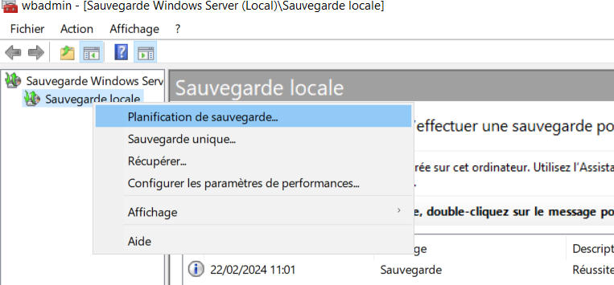
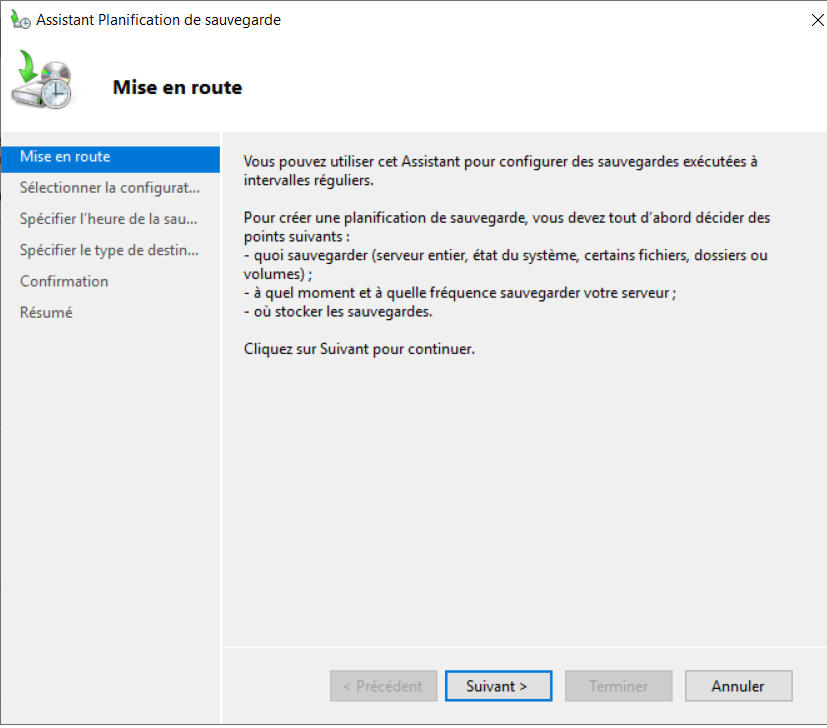
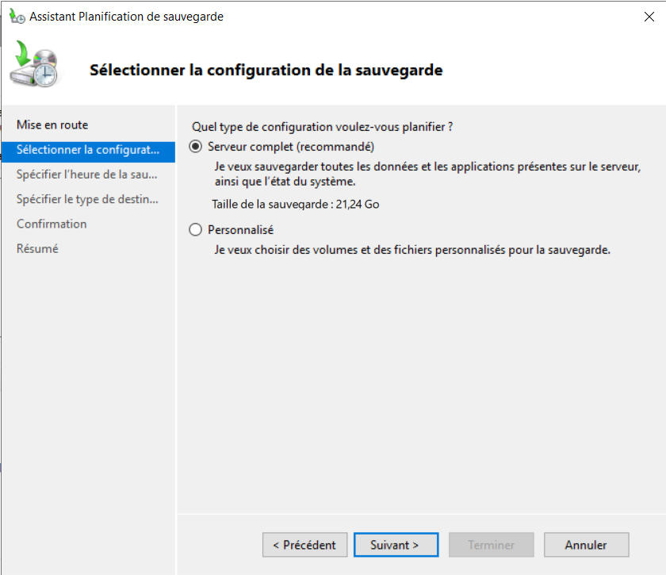
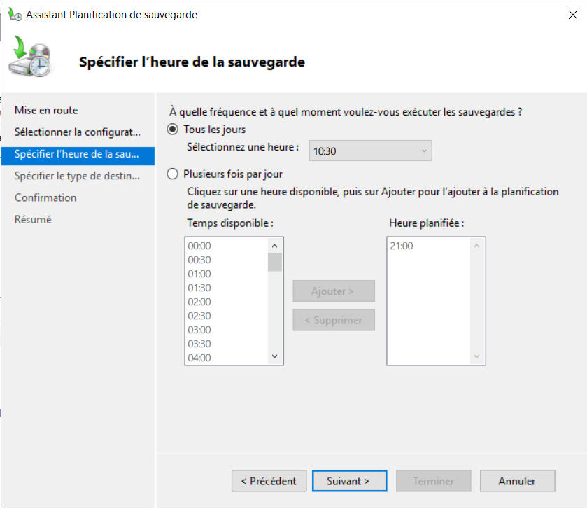
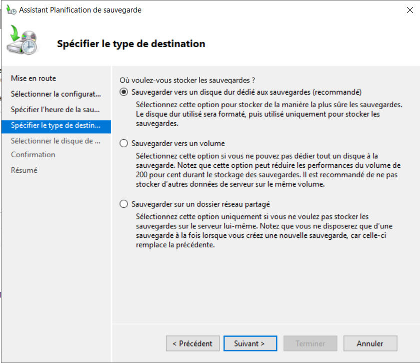
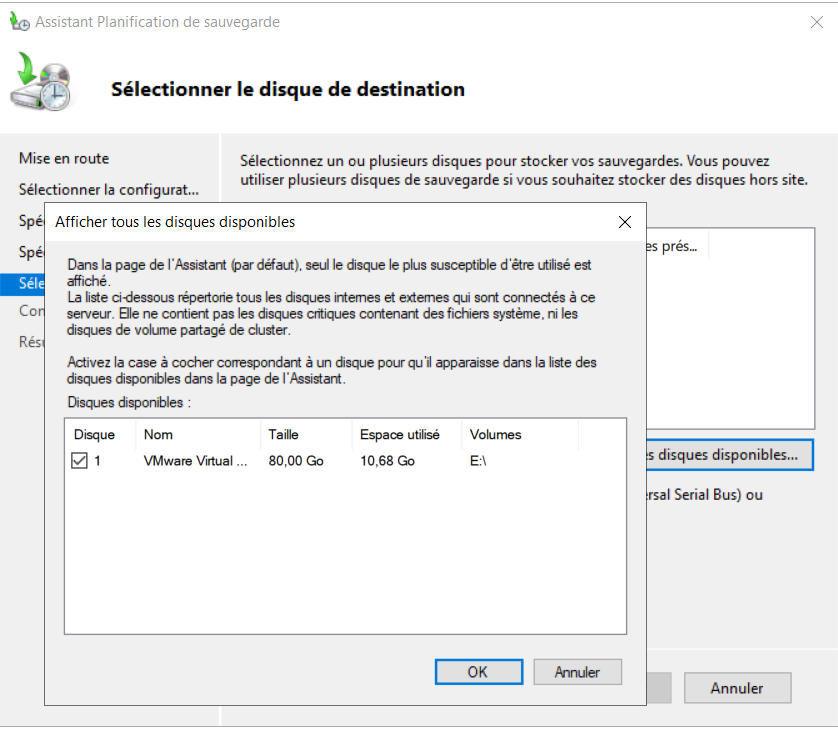
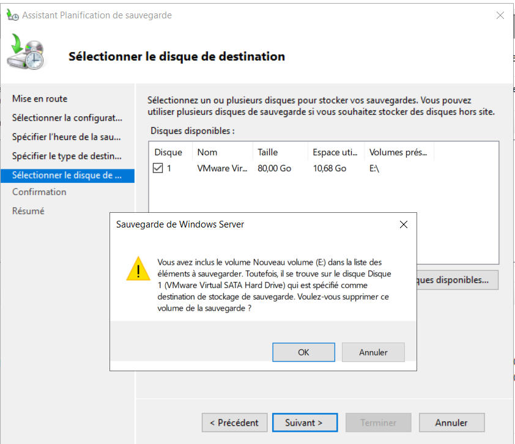
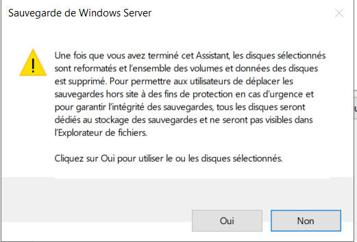
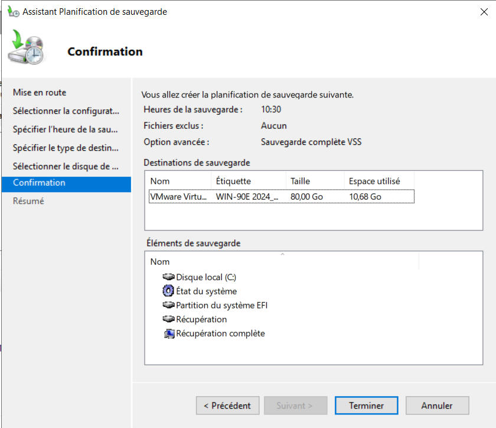

Planifiée
Dans le gestionnaire de sauvegarde, on fait un clic droit sur Sauvegarde locale puis on clique sur Planification de sauvegarde…

On clique sur Suivant >

On choisit si on veut sauvegarder tout le serveur, ou seulement des volumes ou des fichiers

On choisit la fréquence des sauvegardes

On choisit la destination de notre sauvegarde

On clique sur Afficher les disques disponibles… Puis on sélectionne notre disque dédié aux sauvegardes

On clique sur OK pour enlever le disque choisit des données à sauvegarder

Le disque sera formaté et n'apparaîtra plus dans l'explorateur de fichiers

On obtient alors le récapitulatif de la planification de la sauvegarde
